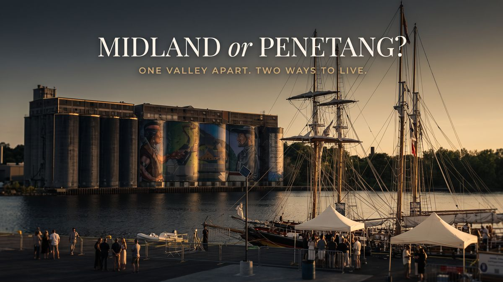

Community guide

Midland and Penetanguishene are close to one and the same town in daily life, separated by little more than a small valley, and residents of each use the other constantly. Midland, with a 2021 census population of 17,817, is the amenity centre: the hospital, the big box stores, more grocery and retail, the YMCA, the upgraded arena, and the downtown library. Penetanguishene, at 10,077 and growing faster (up 12.4% between the 2016 and 2021 censuses versus Midland's 5.7%), answers back with the better public waterfront, more waterfront homes along its longer stretch of shoreline, a mix of original cottages and new builds on the water, and a building department that is easier to work with if you plan to build. Both have deep-water boating and world-class marinas. The right answer depends on which of those differences touches your actual week.
Two towns, one valley apart
Start with how connected they are. The towns share more than a border: town councils are separate, but some administration is shared, right down to building department officials working across both and the fireworks alternating each year between the Midland and Penetanguishene waterfronts. Nobody in either town thinks twice about crossing the valley for groceries, hockey, or dinner. You are not choosing between two regions. You are choosing which end of one community you sleep in.
Where Midland wins
Midland is the service centre of southern Georgian Bay, and it shows in the everyday list: Georgian Bay General Hospital, the big box stores and the larger grocery and retail selection, the YMCA, the downtown public library, and a significantly upgraded arena, where Penetanguishene is still on its original rink and has no community centre or public library of its own. Midland also has two golf courses; Penetanguishene has none. On the water, Midland is home to Wye Heritage Marina, arguably the largest freshwater marina anywhere, and the boating culture around it runs deep.
One honest note from years of working both towns: Midland has not done a good job of turning its downtown waterfront location into public amenities. The harbour is there, the potential is obvious, and the town has not yet made the most of it.
Where Penetanguishene wins
Penetanguishene's downtown core is small, but the town uses its waterfront the way a waterfront should be used. Rotary Park brings a beach, a splash pad, and walking trails together right on the water, exactly the kind of public shoreline Midland lacks. Because the town stretches further along the Georgian Bay shoreline, there are technically more waterfront homes in Penetanguishene, and unlike Midland, which has no real cottages on the water, Penetang's shoreline is a mix of original cottages and new builds.
If you are building, Penetanguishene is much more progressive to work with, and its building department is much easier to deal with. It is a real employment town too, with the Central North Correctional Centre, the Waypoint Centre for Mental Health Care, and manufacturing employers up off Fuller Avenue. And for anglers: there is an argument you reach the key salmon fishing holes faster out of Penetanguishene than out of Midland Bay.
Schools, language, and taxes: the details that decide it
Penetanguishene has a stronger Francophone community, while Midland is more English-speaking, and that shows up in the schools. There is currently no English-speaking high school in Penetang, so high schoolers are bused into Midland. On the other side of the ledger, Penetanguishene's Burkevale is one of the area's most sought-after separate schools, popular enough that parents drive kids in from other communities for it.
Property taxes on a similar home tend to run slightly higher in Penetanguishene, because a similar municipal load is shared across fewer residents. It is not a dealbreaker, but it belongs in your monthly math.
What the housing looks like
Both towns have executive neighbourhoods, and both cover a similar single-family range: entry points around $375,000, an average price point around $600,000, and high-end homes typically running $800,000 to $1 million, with waterfront its own market above that. Both connect to the Trans Canada Trail. The real difference is texture: Midland offers more inventory and more subdivision variety; Penetanguishene offers the shoreline mix, from original cottages to new waterfront builds, that Midland simply does not have.
How to decide
If your week revolves around amenities, the hospital, the YMCA, the library, the golf course, and one-stop shopping, Midland removes friction every single day. If your week revolves around the water itself, a beach and splash pad you can walk to, a cottage or waterfront build, or getting the boat to the fish faster, Penetanguishene gives you more of the shoreline life per dollar, with everything Midland offers ten minutes away. And if you plan to build new, Penetang's building department alone can tip the decision.
Walk both waterfronts on the same Saturday and you will feel it. Then let the specific house break the tie. Both towns have full guides on this site: Midland and Penetanguishene, and you can see inside real homes in both on the Georgian Bay Home Tour series.
Frequently asked questions
How big are Midland and Penetanguishene?
In the 2021 census, Midland's population was 17,817 and Penetanguishene's was 10,077. Penetanguishene grew faster between 2016 and 2021, up 12.4% versus Midland's 5.7%.
Are property taxes different between the two towns?
For a similar home, Penetanguishene tends to run slightly higher because its mill rate is spread across fewer residents. Confirm current rates with each town before you budget.
Where do Penetanguishene kids go to high school in English?
There is currently no English-language high school in Penetanguishene, so students are bused into Midland. Penetang's Burkevale separate school, however, draws families from other communities.
Which town is better for waterfront living?
Penetanguishene has more waterfront homes along its longer shoreline, a mix of original cottages and new builds, and the better public waterfront in Rotary Park. Midland's strength on the water is its marinas, including Wye Heritage.
Who can compare specific homes in both towns?
Jonathan Wallace is a full-time REALTOR® with Faris Team Real Estate, Brokerage, based in Midland and working in both towns weekly. Start the conversation or get a free valuation if you have a home to sell first.
Jonathan Wallace, Salesperson, Faris Team Real Estate, Brokerage. 705-433-2525. Census figures: Statistics Canada, 2021 Census of Population. Price ranges are approximate and move with the market; ask for current sold data before you decide.